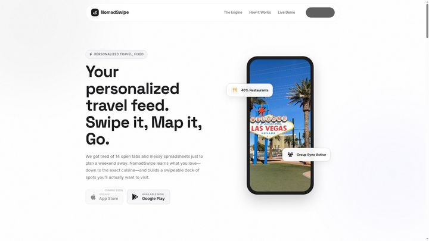

Sep 2025 — Present
Founder & Full-stack Developer
NomadSwipe · Remote
Founded and continue to build a React Native travel-planning product end-to-end.
- Own product strategy, interface design, architecture and day-to-day development.
- Build the React Native mobile application and supporting full-stack systems.
- Handle recommendation logic, maps, testing, releases, maintenance and the product website.
